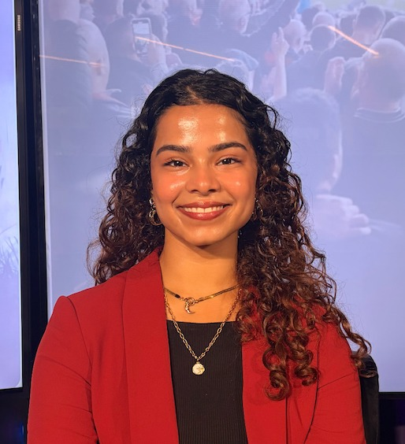

Brand Strategy through Consumer Insights
Most strategy comes from a framework and secondary data. Mine builds on that through my experience coding qualitative research, moderating sessions, and catching what a deck would have missed.

01 — CLIENTS
CLIENTS & PARTNERS
02 — END-TO-END OWNERSHIP
Every study meant managing the client relationship, the budget, and the field partners and moderators delivering on it, while protecting the data quality that connected fieldwork back to the client's actual business problem.
03 — WHO AM I?
Beyond research, I'm an athlete — a former competitive gymnast, equestrian, and powerlifter. None of it came naturally to me. I got better at each one by showing up on the days it would've been easier to quit. That's taught me passion and talent make success look easy — but it's the work you put in on what doesn't come naturally that actually builds you. I carry that into everything I do, and I get real satisfaction from helping a business, or a person, get somewhere they couldn't get to alone.
I bring to the table 3+ years of qualitative research experience — agency-side across CPG, tech, healthcare, and beauty clients, and academic-side researching how multicultural audiences engage with American sports, with direct implications for sports marketers building audience strategy. I decided to pursue an MS in Integrated Marketing Communications at Northwestern's Medill School, as a deliberate investment in turning fieldwork instinct and my passion to uncover consumer truths into helping brands that want to champion serving real consumer and market needs.